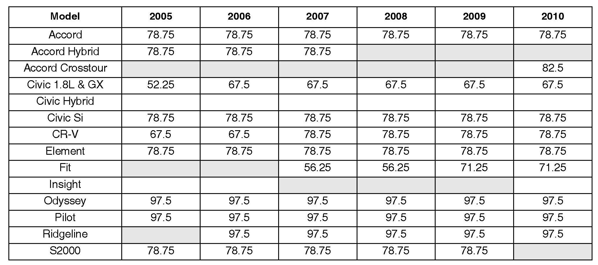

Alternator: Testing and Inspection
Alternator Testing, Update by SMU #10-054
September 8, 2010
Applies To:
2005-10 Models - ALL
Service Manual Update: Alternator Testing
BACKGROUND
American Honda is currently developing new equipment and procedures for testing alternators and starters. Until this equipment is released, please use the following information.
Do not use the ED-18 for testing alternators because it will misjudge the charging system performance on some models, leading to the unnecessary replacement of good parts. To properly test alternators, use one of the following tools:
^ OTC Tester - Includes the following testers:
0TC3130, OTC3130AGM, 0TC3131, and
0TC3131 AGM
^ ARBST
^ VAT40
If you do not have one of these tools, the OTC tester is available through the special tool loan program. For more information about the loan program, refer to S/B 98-051, Special Tool Loan Program.
Honda vehicles use an electronic load detection (ELD) circuit in the charging system to reduce fuel consumption. The alternator has two modes; low output and high output. When the vehicle is cruising and there is a light electrical load, the alternator switches to the low output mode that produces about
12.5 V and low amperage. When the vehicle load increases (the customer turns on the headlights, the seat heaters, the rear defroster, etc.), the alternator switches to the high output mode that raises the voltage and amperage.
WARRANTY CLAIM INFORMATION None.
ALTERNATOR TEST
For more information on the OTC tester, refer to its user guide. Besides the one that came with the tool, you can also find the guide online under General Publications, Tool Information.
1. Question the customer about the events that led up to the problem. Many charging system complaints are caused by leaving the headlights or interior lights on, headlight flicker, or installing aftermarket accessories with a high parasitic draw that drains the battery.
2. Visually inspect the battery cables and grounding straps to confirm the connections are clean and tight. If there are any damaged parts or loose connections, repair them as needed.
3. Test the vehicle battery with the GR-8. Refer to S/B 88-023, Battery Testing and Replacement.
4. Connect the OTC tester to the vehicle:
^ Connect the negative (-) heavy load lead to the negative battery terminal.
^ Connect the positive (+) heavy load lead to the positive battery terminal.
5. Calibrate the OTC tester by holding the amp probe away from any conductors, and pressing the ZERO AMPS button.
6. Connect the amp probe to the vehicle's negative battery cable. Make sure the arrow on the probe points toward the vehicle's battery.
NOTE:
If the vehicle has a second battery negative cable, make sure the probe is around that as well.
7. Enter the number of cylinders on the OTC tester.
8. Start the engine, set the parking brake to turn off the DRL (daytime running lights), and turn off all other electrical accessories.
9. Press the CHARGING SYSTEM TEST button.
10. Raise and hold the engine speed at 2,000 rpm until RUN AT IDLE appears on the display.
NOTE:
Stand back from the battery, and do not place any objects on top of the OTC tester; it gets hot during testing.
11. Let the engine idle until TEST COMPLETE appears on the display.
12. Press CONTINUE to see the results, and write them down. The first screen lists the REGULATOR VOLTS. Press CONTINUE again to list the PEAK AMPS.
13. Refer to the AMPERAGE LOAD SPECIFICATIONS table, and compare the vehicle results against the listed amperage value.
Is the vehicle amperage (PEAK AMPS) equal to or greater than the value listed in the AMPERAGE table?
Yes - Go to step 14.
No - Replace the alternator, and retest.
14. Check the regulator voltage you wrote down in step 12.
^ If it's between 13.5 and 15.1 V, the alternator is OK. Continue with normal troubleshooting.
^ If it's not between 13.5 and 15.1 V, replace the alternator, and retest.

AMPERAGE LOAD SPECIFICATIONS
NOTE:
The amperage values listed below are used for testing purposes and represent 75% of the alternator's maximum output.

Disclaimer